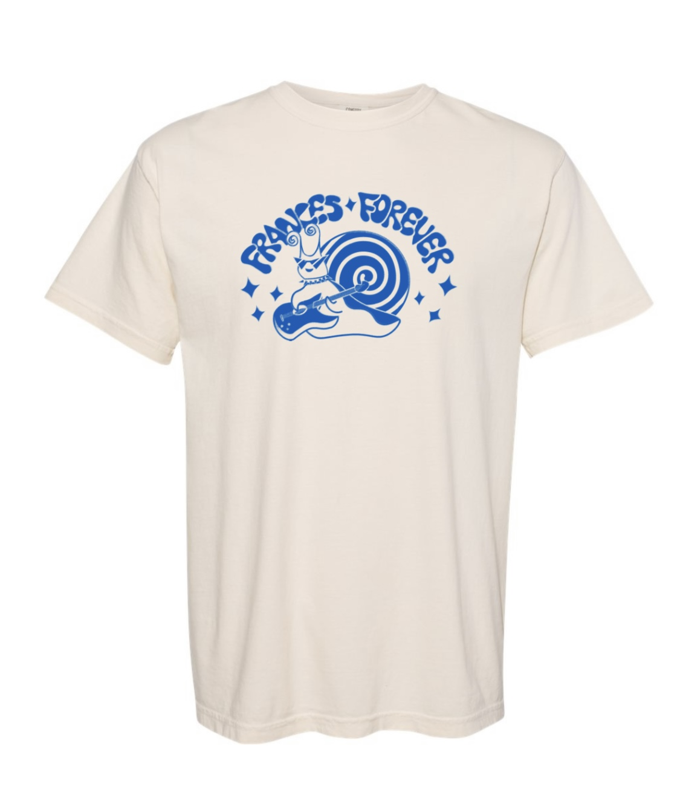
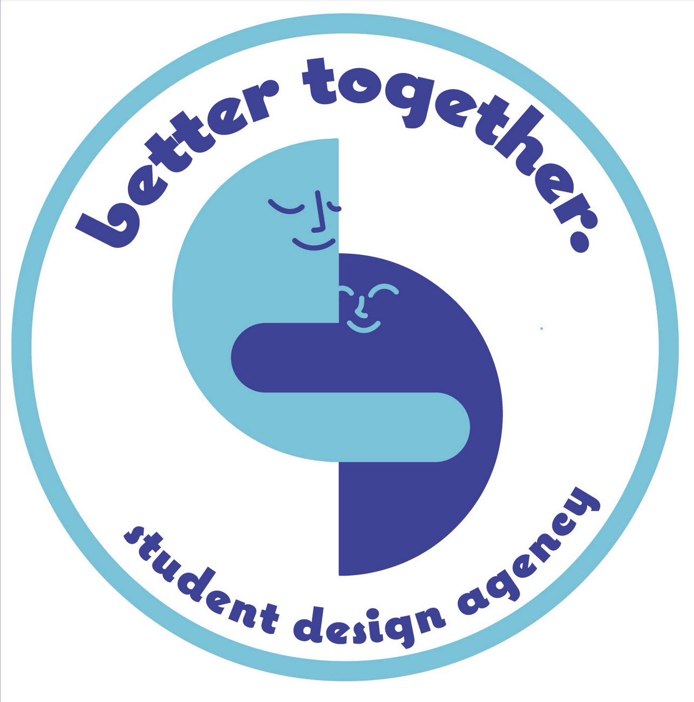
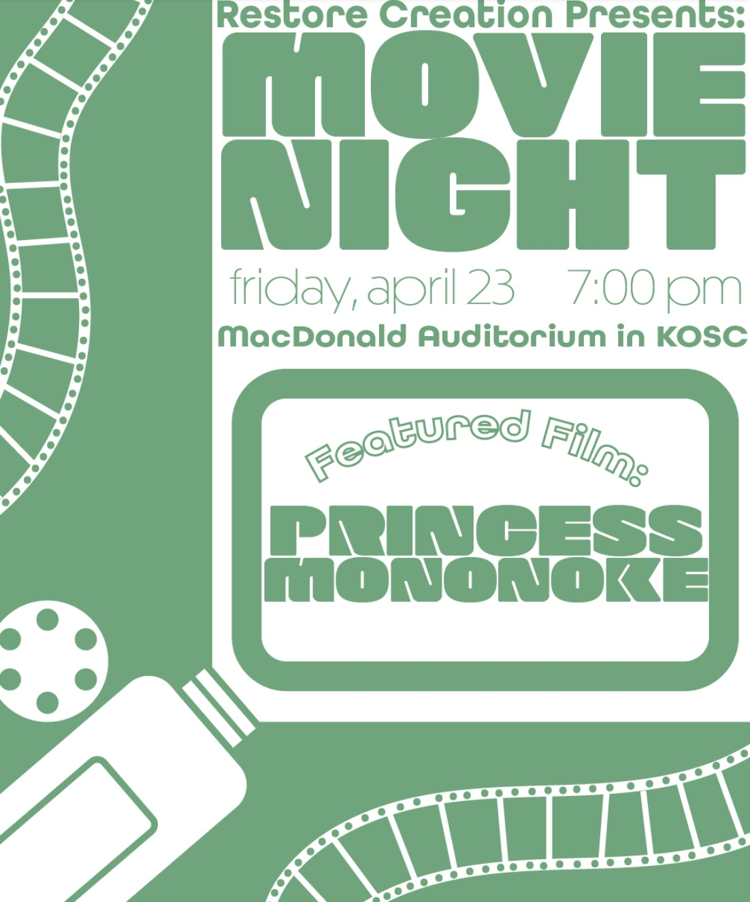
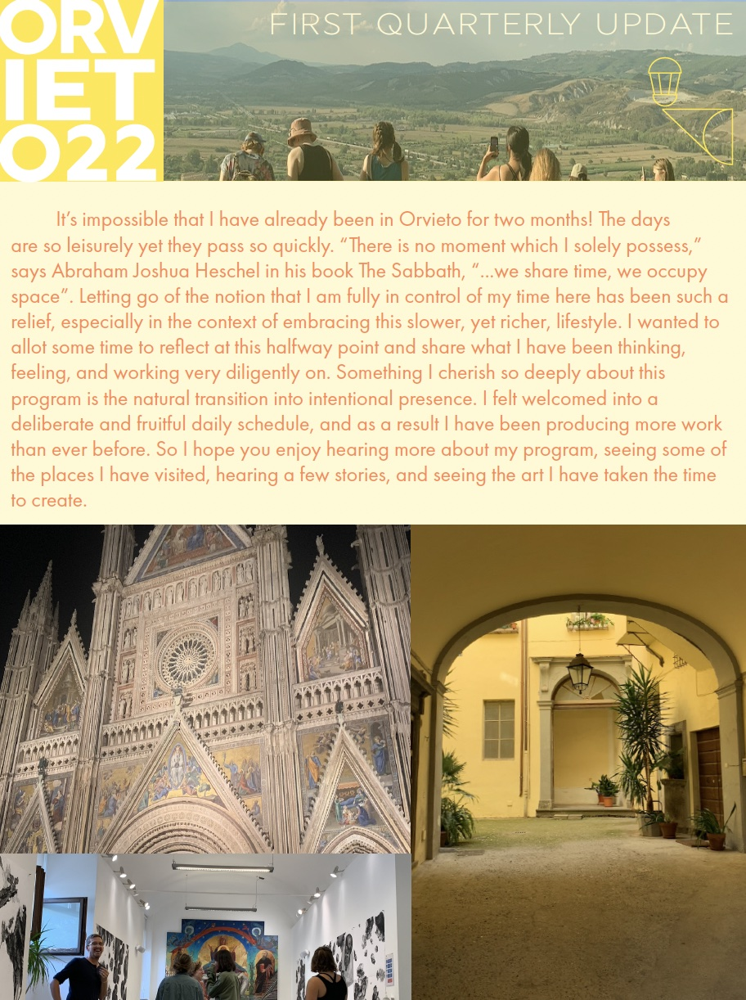
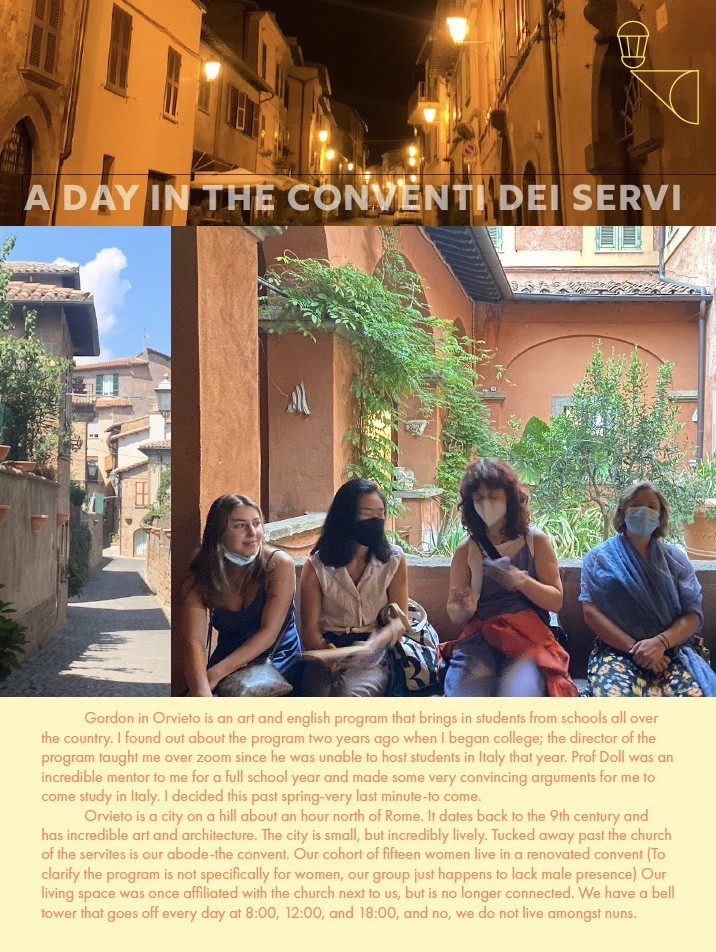
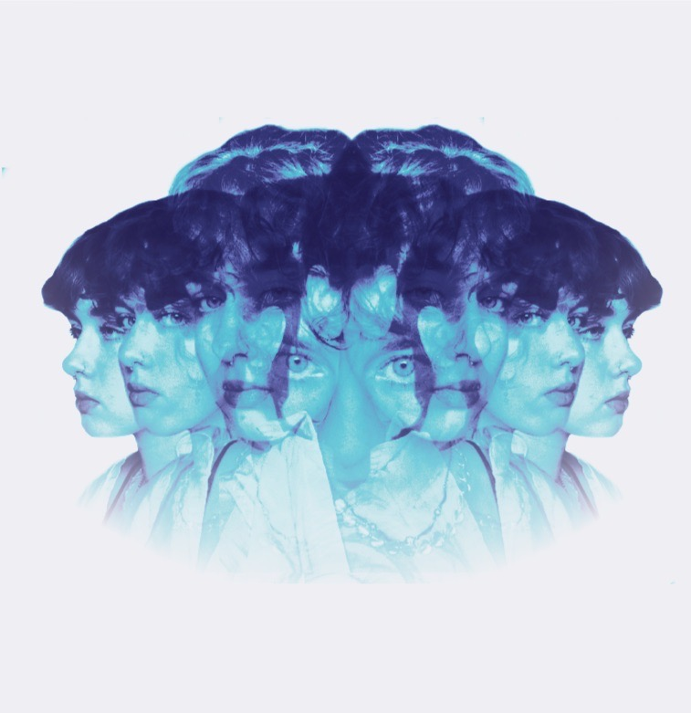
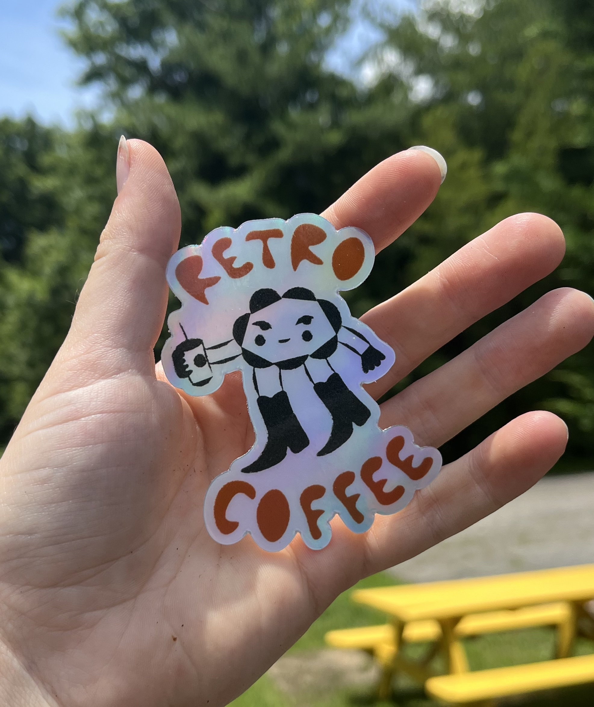
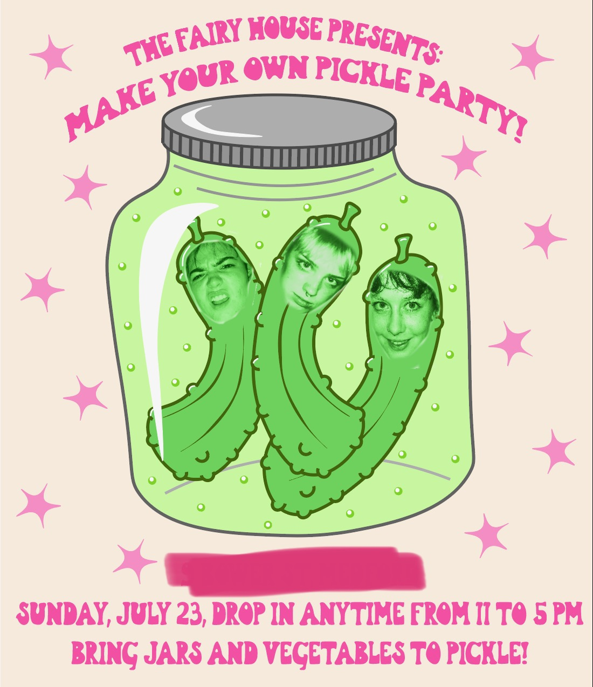

I have been working in Adobe Illustrator, InDesign, and Photoshop since 2020 to make various digital designs and layouts. These include newsletters, flyers, logos, and many various product designs/illustrations.

I was recently given the opportunity to collaborate with Frances Forever on their recent merchandise for their US tour. The shirts sold out in less than a month, and I received an abundance of supportive feedback from fans and fellow creatives.
I was the co-director of Gordon College's student design agency in 2021. This responsibility meant being a liaison between student designers and clients, organizing meetings and events, managing social media accounts, assisting students with access to design platforms, and critiquing projects. I also took projects from time to time, and worked closely with students and faculty to execute their vision.
 


While studying in Italy I took the time to use my InDesign experience to create a newsletter to send to my friends and family back home.
I was considered one of the top finalists in Adobe's merchandise design competition for Billie Eilish. Though I did not end up winning, my design (in blue) was considered and received much praise under the instagram hashtag #billiexadobe.


other various designs
digital self portrait
sticker for Retro Coffee
Pickle-making party flyer
